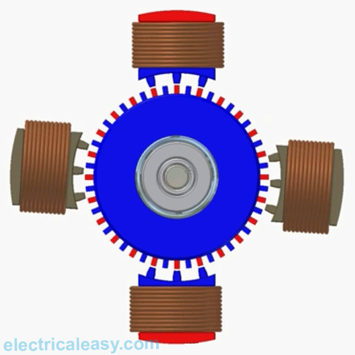
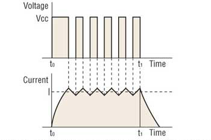
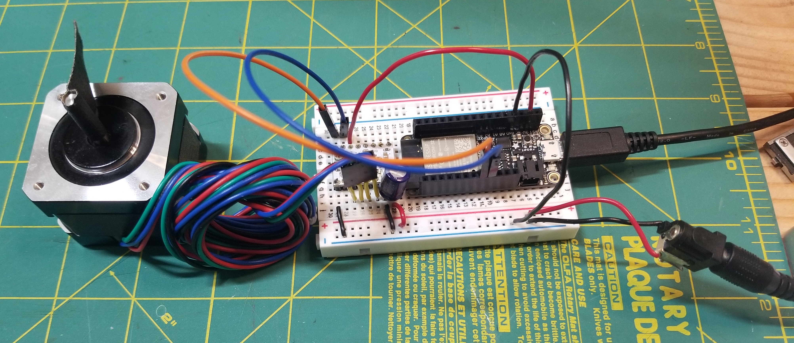
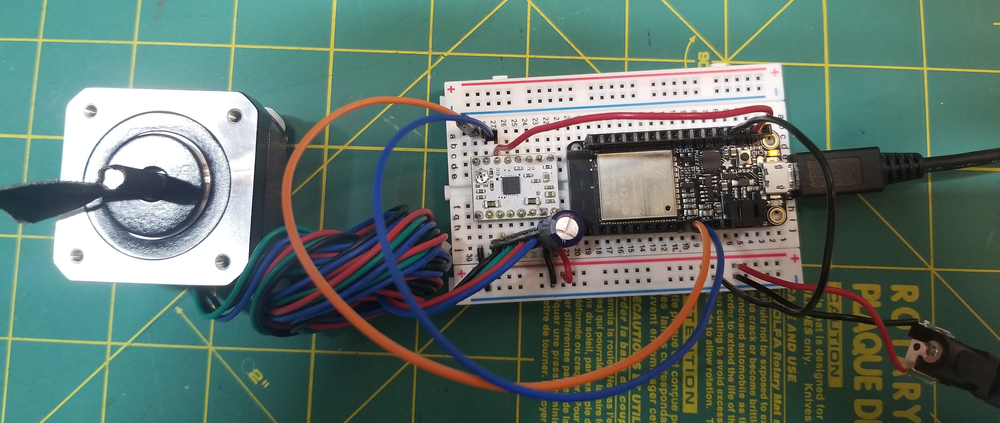
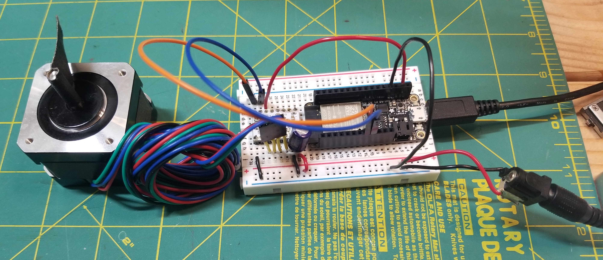
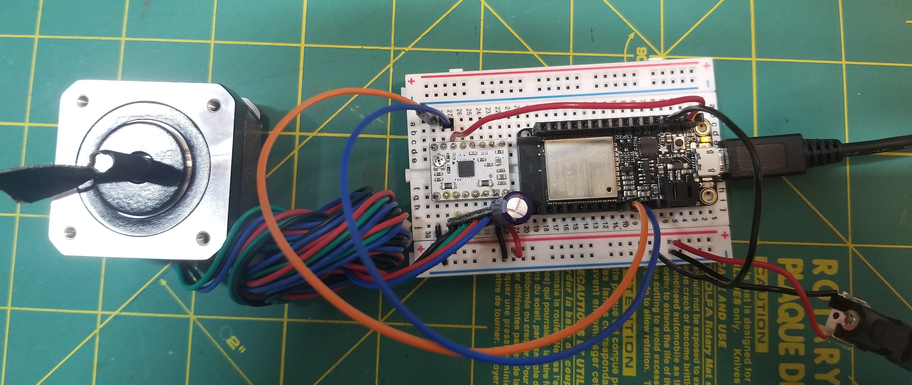

Stepper Motor Control
Stepper Motors
Stepper motors are great for position control. They can be found in desktop printers, plotters, 3d printers, CNC milling machines, and anything else requiring precise position control.
Pros
- Excellent position accuracy
- High holding torque
- High reliability
- Most steppers come in standard sizes
Cons
- Small step distance limits top speed
- It's possible to "skip" steps with high loads
- Draws maximum current constantly
We will be using bipolar stepper motors. Compared to unipolar stepper motors, bipolar steppers require more complicated circutry (in order to switch polarities) but are stronger by weight.
Driving Stepper Motors
There are a number of ways to drive stepper motors. We can send motor coils HIGH and LOW pulses directly from our microcontroller, but that won't give us much current.
A chopper drive addresses the problem of obtaining high torque at high speed from a stepper motor by turning the output voltage to the motor on and off rapidly (aka “chopping”) to control the motor current. At each step of the motor, a very high voltage (typically eight times higher than the motor’s nominal voltage) is applied to the motor windings. This causes the current to rise rapidly, according to the relationship between current rise and inductance. It also allows higher current to be produced, according to Ohm’s law. (From Linear Motion Tips.
Microstepping
Microstepping is a method of controlling stepper motors, typically used to achieve higher resolution or smoother motion at low speeds. Microstepping control divides each full step into smaller steps to help smooth out the motor’s rotation, especially at slow speeds. For example, a 1.8 degree step can be divided up to 256 times, providing a step angle of 0.007 degrees (1.8 ÷ 256), or 51,200 microsteps per revolution.
Microstepping is achieved by using pulse-width modulated (PWM) voltage to control current to the motor windings. The driver sends two voltage sine waves, 90 degrees out of phase, to the motor windings. While current increases in one winding, it decreases in the other winding. This gradual transfer of current results in smoother motion and more consistent torque production than full- or half-step control.
DRV883 Driver
We will be using the DRV8834 Low-Voltage Stepper Driver. Make sure to review the product description and datasheet.
Note: This product can get hot enough to burn you long before the chip overheats. Take care when handling this product and other components connected to it.
Stepper Motor
Nema 17 Bipolar 1.8deg 26Ncm (36.8oz.in) 0.4A 12V 42x42x34mm 4 Wires.
Note some of the Electrical Specifications:
- Rated Current/phase: 0.4A
- Voltage: 12V
- Phase Resistance: 30ohms
Current Limiting
Our motors have a maximum current rating of 0.4A with a 30Ω coil resistance, which would indicate a maximum motor supply of 12V. Using such a motor with a higher voltage would allow higher step rates, but the current must actively be limited to under 0.4A. (Anyway, we won't be using more than 9V).
Wiring
Wire the board as described on the product page. Include a 100uF capacitor between the VCC and GND in order to protect the driver from voltage spikes. In the photo, I've used a barrel jack connector to connect to a 9V wall outlet supply. Alternatively, you could run the motor at a lower voltage, like the 5V supply from the USB pin on the Huzzah.
 



Programming
At the most basic level, we can control the chopper driver simply by sending pulses to the STEP pin of the driver.
const int stepPin = 13;
const int dirPin = 12;
void setup() {
// put your setup code here, to run once:
pinMode(stepPin, OUTPUT);
pinMode(dirPin, OUTPUT);
digitalWrite(dirPin, LOW);
}
void loop() {
// put your main code here, to run repeatedly:
digitalWrite(stepPin, LOW);
delay(50);
digitalWrite(stepPin, HIGH);
delay(50);
}
Switching the DIR pin from LOW to HIGH will reverse the direction of the motor.
We can choose a library to help simplify control of stepper motors. The Arduino Stepper Motor Library supports differnt driver configurations. The AccelStepper library extends this functionality with acceleration/deceleration and non-blocking (no delay()) functions.
#include <AccelStepper.h>
const int stepPin = 13; // blue
const int dirPin = 12; // orange
// Define a stepper and the pins it will use
AccelStepper stepper(1, stepPin, dirPin); // initialise accelstepper for a two wire board
void setup()
{
}
void loop()
{
if (stepper.distanceToGo() == 0)
{
// Random change to speed, position and acceleration
// Make sure we dont get 0 speed or accelerations
delay(1000);
stepper.moveTo(rand() % 1000);
stepper.setMaxSpeed((rand() % 1000) + 1);
stepper.setAcceleration((rand() % 1000) + 1);
}
stepper.run();
}